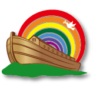
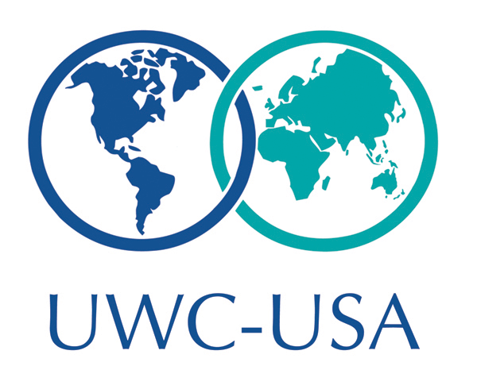

amelie-sophie_vavrovsky@brown.edu - 707.974.0145
amelie-sophie_vavrovsky@brown.edu - 707.974.0145

At age 3, I declared I wanted to be a diplomat. When I turned 7 I decided to learn all the official UN languages: English, Spanish, French, Russian, Mandarin, and Arabic. Today I study International Relations and Middle Eastern Studies at Brown University.
I believe we need to take a multilateral approach on a global scale. We need to share and govern this world with empathy, take and share responsibility for another, and collaborate on solving transnational issues. I excel at facilitating collaboration between individuals from all sorts of backgrounds (economic, national, industry, etc), and I believe this is what we need for a better future.
Research and the acquisition of critical analysis skill, both qualitative and quantitative, have been the driving forces of my experience at Brown. I want to learn; to seek new knowledge and find innovative answers to the immensely challenging issues of our time. My passion for innovation and desire for continued personal growth are the factors pushing me to work towards drafting international policy for a more equal world.



amelie-sophie_vavrovsky@brown.edu - 707.974.0145